Meu Editor de Arquivos — Benutzerhandbuch
Version 1.1.0
1. Willkommen
Meu Editor de Arquivos ist ein schlanker Editor für alle, die mit Texten, Notizen, Skripten, Konfigurationsdateien, Protokollen und Programmcode arbeiten. Er läuft unter Windows 11, Debian 12 und 13 sowie Ubuntu 22.04 oder neuer und braucht für die Bearbeitung keine Internetverbindung.
Das bietet Ihnen das Programm:
- Registerkarten für mehrere Dateien gleichzeitig, mit automatischer Wiederherstellung Ihrer Eingaben;
- Markdown, das formatiert geöffnet wird, mit einer Schaltfläche zum Bearbeiten des Textes;
- einen JSON-Viewer, in dem Sie Teile der Datei auf- und zuklappen können;
- Suchen und Ersetzen in einer Datei oder in einem ganzen Ordner;
- Syntaxfarben für Dutzende Sprachen, Snippets und Makros;
- ein Benutzerkonto, um Dateien in der Cloud zu speichern und auf anderen Computern zu öffnen;
- eine Benutzeroberfläche in sechs Sprachen.
2. Die Oberfläche kennenlernen
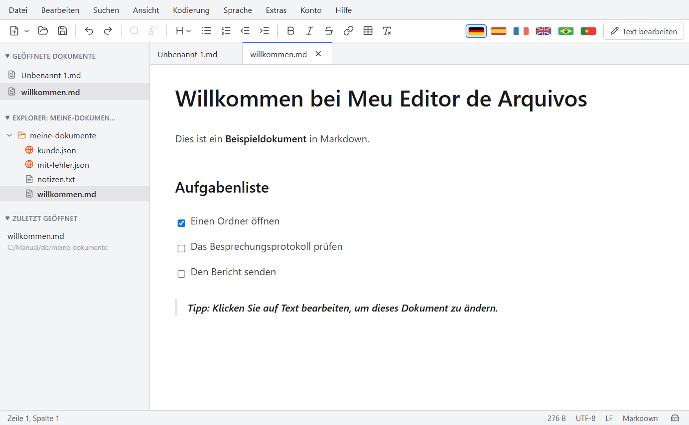
- Menüleiste (oben): Datei, Bearbeiten, Suchen, Ansicht, Kodierung, Sprache, Extras, Konto und Hilfe.
- Symbolleiste: Schnellzugriff auf die häufigsten Befehle. Die Formatierungsschaltflächen erscheinen, wenn das Dokument Markdown ist. Rechts finden Sie die Sprachflaggen und die Schaltfläche zum Wechseln zwischen Vorschau und Bearbeitung.
- Seitenleiste (links): die geöffneten Dokumente, der Explorer für den geöffneten Ordner und Ihre zuletzt geöffneten Dateien. Mit Ctrl+Shift+B blenden Sie sie aus oder wieder ein.
- Registerkarten: Jedes Dokument hat eine eigene Registerkarte. Ein Punkt (●) neben dem Namen zeigt Änderungen an, die noch nicht in die Datei geschrieben wurden.
- Bearbeitungsbereich: Hier lesen und schreiben Sie.
- Unterer Bereich: zeigt die Ergebnisse der Suche in Dateien. Er öffnet sich von selbst, wenn Sie die Suche verwenden.
- Statusleiste (unten): Zeile und Spalte des Cursors, Dateigröße, Kodierung, Art der Zeilenenden und die Sprache des Dokuments.
3. Dateien erstellen und öffnen
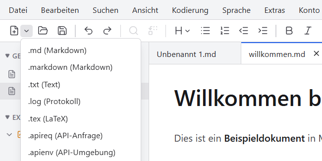
- Neues Dokument: Klicken Sie auf Neu oder drücken Sie Ctrl+N. Ein neues Dokument ist Markdown (.md). Mit dem Pfeil neben der Schaltfläche erstellen Sie einen anderen Typ: .md (Markdown), .txt (Text), .py (Python) oder .sql (SQL).
- Dateien öffnen: Datei → Öffnen oder Ctrl+O. Sie können mehrere Dateien auf einmal auswählen. Die Grenze liegt bei 50 MB pro Datei.
- Einen Ordner öffnen: Datei → Ordner öffnen oder Ctrl+Shift+K. Der Ordner erscheint im Explorer der Seitenleiste; ein Klick auf eine Datei öffnet sie. Mit Ordner schließen schließen Sie ihn.
- Zuletzt geöffnete Dateien: Die zuletzt verwendeten Dateien stehen in der Liste Zuletzt geöffnet in der Seitenleiste. Klicken Sie auf eine Datei, um sie erneut zu öffnen.
Wenn ein anderes Programm eine geöffnete Datei ändert, lädt die Anwendung sie selbstständig neu. Haben Sie in diesem Dokument eigene, noch nicht gespeicherte Änderungen, fragt sie vorher nach. Wird die Datei gelöscht oder verschoben, wird der Name der Registerkarte rot und durchgestrichen.
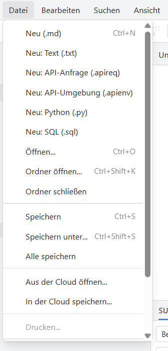
Über die Seitenleiste organisieren
Klicken Sie mit der rechten Maustaste auf einen Ordner oder eine Datei in der Seitenleiste, auf dem Computer oder in der Cloud:
- Umbenennen (Ordner und Dateien): öffnet das Fenster Ordner umbenennen bzw. Datei umbenennen mit dem aktuellen Namen. Geben Sie den neuen Namen ein und klicken Sie auf Ändern. Der Name darf nicht leer sein und kein
\ / : * ? " < > |enthalten. Geöffnete Tabs dieser Datei oder der Dateien im Ordner übernehmen den neuen Namen. - Ordnerfarbe ändern (Ordner): öffnet das Fenster Ordnerfarbe mit zwölf Farben; die aktuelle ist markiert. Wählen Sie eine andere und klicken Sie auf Farbe ändern. Die Farben werden auf diesem Computer gespeichert.
- Löschen (Ordner): nur verfügbar, wenn der Ordner leer ist.
Der im Explorer geöffnete Ordner kann hier weder umbenannt noch gelöscht werden.
Jede Datei hat ein Symbol nach ihrem Typ: Dokumente (.md, .txt, .tex), Logs, Programmierung, Skripte, Web, Daten und Konfiguration (dieselben Bereiche wie die Schaltfläche +) und ein allgemeines Symbol für alle anderen.
Die Bereiche der Seitenleiste (Geöffnete Dokumente, Zuletzt geöffnet, die des API-Clients und die übrigen) haben links vom Namen ein Dreieck: Klicken Sie darauf oder auf den Namen, um den Bereich auf- oder zuzuklappen. Um die Reihenfolge zu ändern, ziehen Sie den Namen des Bereichs nach oben oder unten (per Tastatur Alt+↑ und Alt+↓ bei ausgewähltem Namen). Die Reihenfolge und die zugeklappten Bereiche werden auf diesem Computer gespeichert.
4. Speichern und temporäre Dokumente
- Speichern (Ctrl+S) schreibt das Dokument in seine Datei. Bei einem neuen Dokument fragt die Anwendung nach Name und Speicherort.
- Speichern unter (Ctrl+Shift+S) schreibt eine Kopie unter einem anderen Namen oder an einem anderen Ort.
- Alle speichern schreibt alle Dokumente mit Änderungen.
Von Ihnen Geschriebenes geht nicht verloren. Wenige Sekunden nach jeder Änderung sichert die Anwendung automatisch alle geöffneten Dokumente, auch solche, die nie gespeichert wurden. Das geschieht unabhängig davon, ob Sie speichern oder nicht.
Beim Beenden der Anwendung wird nichts gefragt und nichts verworfen. Beim nächsten Start kommen Registerkarten, Ordner und der nicht gespeicherte Text so zurück, wie sie waren. Speichern Sie, wenn Sie in die eigentliche Datei schreiben möchten.
Beim Schließen einer Registerkarte mit Änderungen fragt die Anwendung, ob Sie speichern, nicht speichern oder abbrechen möchten. Zwei Hinweise: Der Rückgängig-Verlauf (Ctrl+Z) wird nicht von einer Sitzung zur nächsten aufbewahrt, und die automatische Wiederherstellung sichert bis zu 100 MB nicht gespeicherten Text.
5. Text bearbeiten
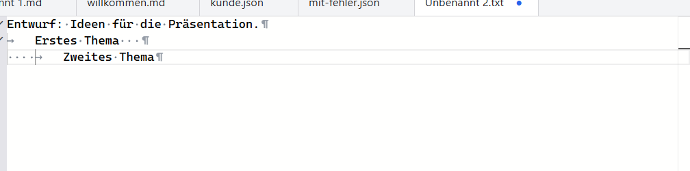
Die Bearbeitungsbefehle finden Sie unter Bearbeiten, die Anzeigeoptionen unter Ansicht.
- Rückgängig und Wiederholen: Ctrl+Z und Ctrl+Y.
- Suchen und Ersetzen im Dokument: Ctrl+F und Ctrl+H. Zu einer Zeile springen Sie mit Ctrl+G.
- Mehrere Cursor: Halten Sie Alt gedrückt und klicken Sie dorthin, wo ein weiterer Cursor stehen soll, oder wählen Sie mit Ctrl+D das nächste Vorkommen des Wortes aus.
- Spaltenauswahl: Halten Sie Shift+Alt gedrückt und ziehen Sie mit der Maus, um mehrere Zeilen in derselben Spalte zu bearbeiten.
- Zeilen: Alt+↑ und Alt+↓ verschieben die Zeile; Shift+Alt+↑ und Shift+Alt+↓ duplizieren sie; Ctrl+/ kommentiert sie aus oder ein.
- Aufräumen: Zeilen sortieren (A-Z), Zeilen sortieren (Z-A), Doppelte Zeilen entfernen und Leerzeichen am Zeilenende entfernen.
- Unsichtbare Zeichen: zeigt Leerzeichen (·), Tabulatoren (→) und das Ende jeder Zeile (¶). Damit finden Sie überflüssige Leerzeichen sofort.
- Zeilenumbruch und Alles einklappen / Alles ausklappen helfen beim Lesen langer Dateien.
- Schriftgröße: Ctrl++ vergrößert, Ctrl+- verkleinert und Ctrl+0 stellt die Standardgröße wieder her.
- Einrückung: Wählen Sie unter Bearbeiten zwischen Leerzeichen und Tabulator sowie die Größe (2, 4 oder 8 Spalten).
- Vollbild (F11, unter Ansicht): zeigt nur das Dokument, bildschirmfüllend. Drücken Sie erneut F11 oder klicken Sie auf die Schaltfläche oben rechts, um den Modus zu verlassen.
- Zwischen hellem und dunklem Modus wechseln (unter Ansicht): wechselt zwischen hellem und dunklem Modus. Solange Sie nichts wählen, folgt die Anwendung dem Design des Betriebssystems; Ihre Wahl wird für das nächste Mal gespeichert.
Ihre Anzeigeeinstellungen werden für das nächste Mal gespeichert. Die eigenen Texte des Editors, etwa das Suchfeld (Ctrl+F) und die Befehlspalette (F1), erscheinen auf Englisch.
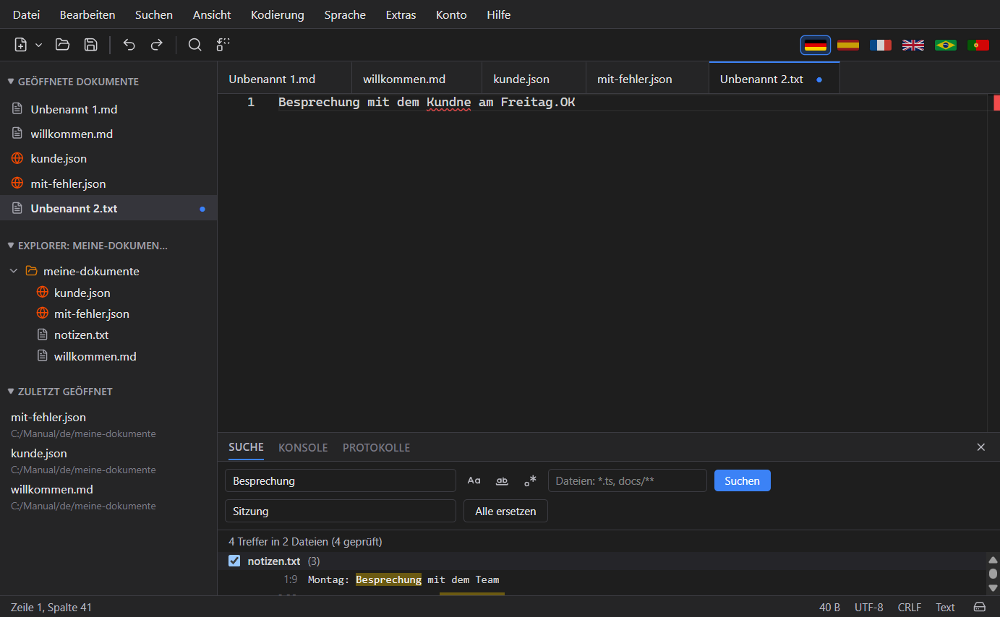
Buchstaben, Leerzeichen und Zeilenenden
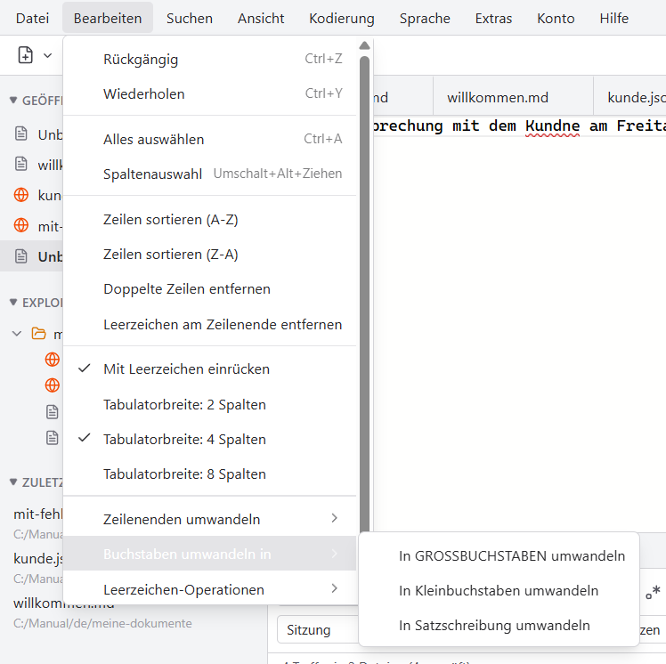
Am Ende des Menüs Bearbeiten gibt es drei Untermenüs:
- Zeilenenden umwandeln: wandelt die Zeilenenden des Dokuments in das Windows- (CRLF), Unix- (LF) oder Mac-Format (CR) um. Eine Umwandlung markiert das Dokument als geändert; zum Wirksamwerden genügt Speichern.
- Buchstaben umwandeln in: Wählen Sie bei markiertem Text In GROSSBUCHSTABEN umwandeln, In Kleinbuchstaben umwandeln oder In Satzschreibung umwandeln (nur der erste Buchstabe jedes Satzes wird großgeschrieben).
- Leerzeichen-Operationen: Leerzeichen rechts entfernen, Leerzeichen links entfernen und Leerzeichen rechts und links entfernen gelten für die Zeile des Cursors (oder die markierten Zeilen). Doppelte Leerzeichen im Dokument entfernen ersetzt im ganzen Dokument zwei oder mehr aufeinanderfolgende Leerzeichen durch eines, ohne die Einrückung am Zeilenanfang zu verändern.
MD5, SHA-1, SHA-256 und SHA-512
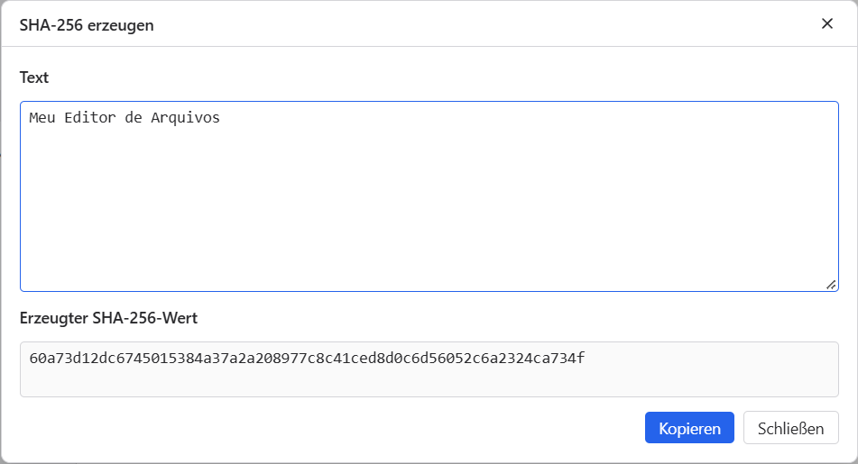
Am Ende des Menüs Extras bietet jeder Algorithmus zwei Optionen:
- Erzeugen: öffnet ein Fenster; geben Sie den Text ein oder fügen Sie ihn ein, und das Ergebnis erscheint sofort darunter. Kopieren legt das Ergebnis in die Zwischenablage.
- Aus markiertem Text erzeugen: berechnet das Ergebnis aus dem im Dokument markierten Text und legt es in die Zwischenablage, bereit zum Einfügen. In der Statusleiste erscheint ein Hinweis.
Terminal
Unter Extras → Terminal öffnen öffnet sich direkt unter dem Dokument ein Terminal in Ihrem persönlichen Ordner: PowerShell unter Windows und Ihre Shell (meist bash) unter Linux. Geben Sie Befehle ein und sehen Sie die Ergebnisse gleich dort; das Dokument bleibt darüber geöffnet, und die Trennlinie zwischen beiden lässt sich verschieben.
- Jeder Klick öffnet ein weiteres Terminal in einem eigenen Tab (Terminal 1, Terminal 2 …). Das × des Tabs schließt das Terminal, ebenso der Befehl
exit. - Mit markiertem Text im Terminal kopiert Ctrl+C; ohne Markierung bricht Ctrl+C den laufenden Befehl ab. Ctrl+V fügt ein.
- Solange der Cursor im Terminal steht, gehen die Tasten an das Terminal (Ctrl+W, Ctrl+R …) statt an die Tastenkürzel der Anwendung.
- Terminals werden beim nächsten Start der Anwendung nicht wiederhergestellt.
Rechtschreibprüfung
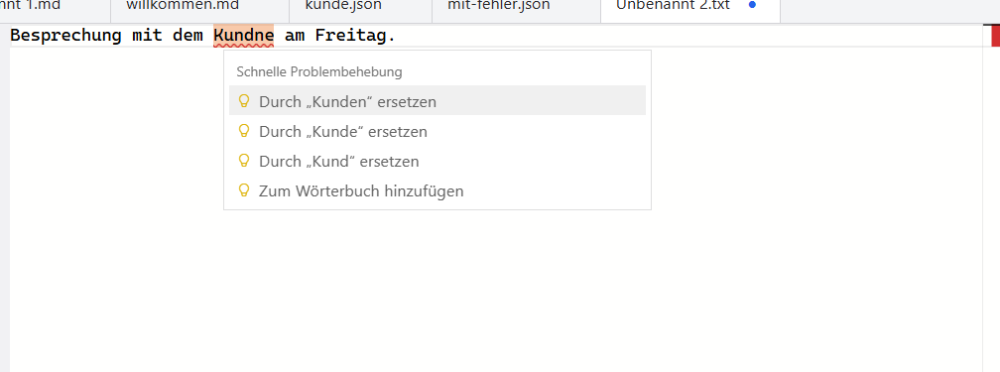
In Markdown-, Text- (.txt) und LaTeX-Dokumenten werden Wörter, die nicht im Wörterbuch stehen, rot unterstrichen. Code, Links, Adressen, Abkürzungen und Text zwischen Backticks werden nicht geprüft; Log- und CSV-Dateien bleiben außen vor.
- Setzen Sie den Cursor auf das Wort und drücken Sie Strg+. (oder Rechtsklick und Rechtschreibvorschläge), um die Vorschläge zu sehen. Wählen Sie einen aus, um das Wort zu ersetzen.
- Zum Wörterbuch hinzufügen lässt das Wort ab sofort in allen Sprachen gelten.
- Extras → Rechtschreibprüfung (oder F7) schaltet die Prüfung ein und aus.
- Die Prüfung verwendet die Sprache der Oberfläche. Für eine andere Sprache wählen Sie in Extras → Verwendete Rechtschreibung eine der Optionen Rechtschreibung: Deutsch, Rechtschreibung: English… — es gibt Wörterbücher für Deutsch, Spanisch, Französisch, Englisch, brasilianisches und europäisches Portugiesisch. Rechtschreibung: Sprache der Oberfläche folgt wieder der Oberfläche.
Die Wörterbücher sind im Programm enthalten: Die Prüfung funktioniert ohne Internet.
6. Markdown
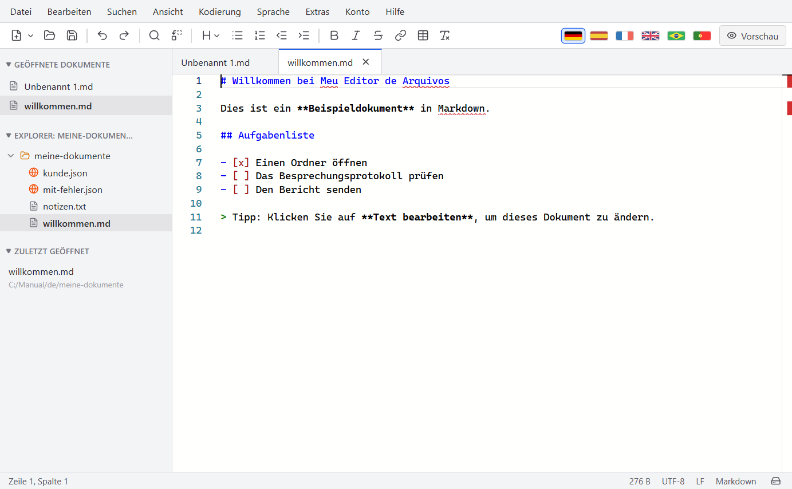
Markdown-Dateien (.md) öffnen sich formatiert, und Sie können direkt im formatierten Text weiterschreiben. Die Symbolleiste wendet die Formatierung an der Cursorposition oder auf die Auswahl an: Überschriften, Aufzählung, nummerierte Liste, Einzug, fett (Strg+B), kursiv (Strg+I), durchgestrichen (Strg+Shift+X), Link, Tabelle und Formatierung entfernen. Strg+Z und Strg+Y machen rückgängig und wiederholen.
Um den Markdown-Quelltext zu sehen und zu bearbeiten, klicken Sie auf Text bearbeiten (oder drücken Sie Strg+Shift+E); zurück zum formatierten Text geht es mit Vorschau. Die Formatierungsleiste funktioniert in beiden Modi.
Wenn Sie den formatierten Text bearbeiten, wird das Markdown in einem einheitlichen Stil neu geschrieben (zum Beispiel Listen mit -). Dokumente mit HTML sind in diesem Modus schreibgeschützt, damit das HTML nicht verloren geht: Bearbeiten Sie sie über Text bearbeiten. Einen Link öffnen Sie mit Strg+Klick im Browser. Bilder erscheinen als Etikett mit ihrem Namen; ihre Adresse bleibt in der Datei erhalten.
7. JSON-Dateien
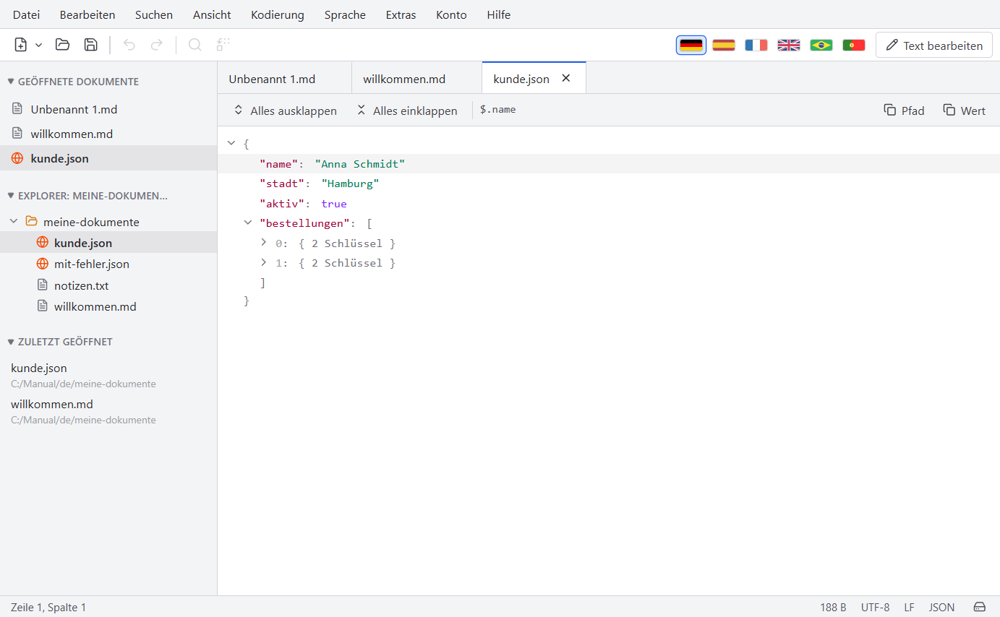
.json-Dateien werden als Baum geöffnet. Klicken Sie auf den Pfeil eines Elements, um diesen Teil auf- oder zuzuklappen. Mit Alles ausklappen und Alles einklappen öffnen oder schließen Sie alles. Wenn Sie ein Element anklicken, zeigt die Leiste seinen Pfad, und Sie können den Pfad oder den Wert kopieren. Sehr große Listen werden nach und nach angezeigt, mit einer Schaltfläche für weitere Einträge.
Zum Bearbeiten klicken Sie auf Text bearbeiten. Im Bearbeitungsmodus ordnet die Schaltfläche JSON formatieren (Shift+Alt+F) die Datei neu.
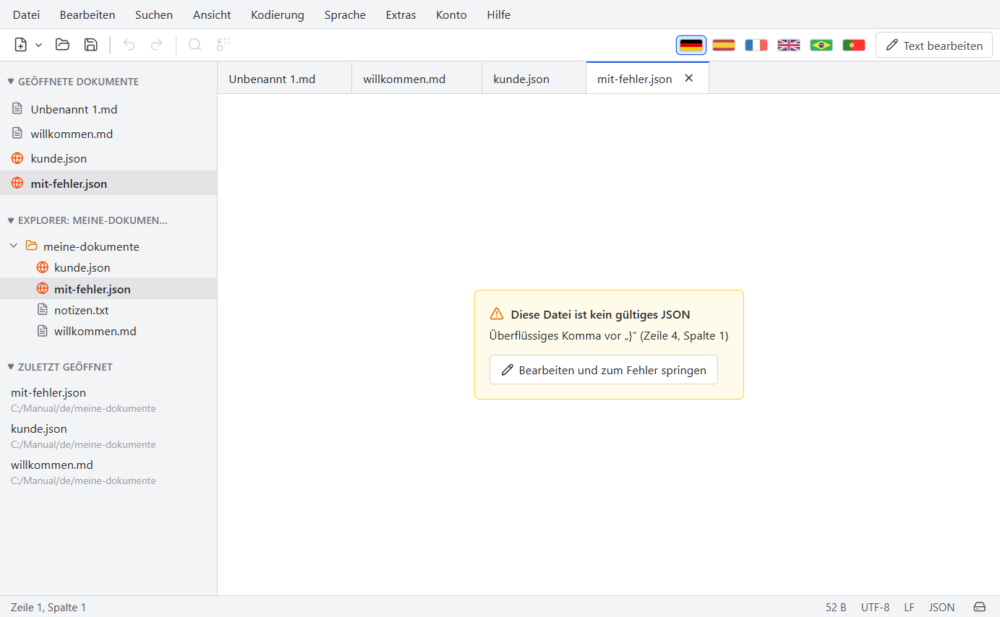
Enthält die Datei einen Fehler, erklärt die Anwendung das Problem und nennt Zeile und Spalte. Die Schaltfläche Bearbeiten und zum Fehler springen öffnet den Editor direkt an der Fehlerstelle.
8. API-Client
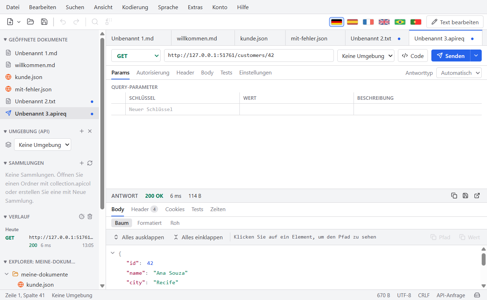
Mit dem API-Client testen Sie Webdienste (APIs): Sie stellen eine Anfrage zusammen, senden sie und prüfen die Antwort, ohne den Editor zu verlassen. Jede Anfrage ist eine .apireq-Datei, die Sie wie jede andere Datei speichern, kopieren und versionieren können.
Öffnen
- Drücken Sie Ctrl+Shift+A oder wählen Sie Extras → API-Client.
- Oder wählen Sie Datei → Neu: API-Anfrage (.apireq).
Das Dokument öffnet sich im Editor. Um die Datei als Text (JSON) anzusehen und zu bearbeiten, klicken Sie auf Text bearbeiten.
Die Anfrage zusammenstellen
Wählen Sie die Methode (GET, POST …) und geben Sie die Adresse bei Anfrage-URL ein. Die Angaben verteilen sich auf Registerkarten:
- Params: die Query-Parameter. Was Sie in die URL schreiben, erscheint hier, und umgekehrt.
- Autorisierung: wie Sie sich beim Dienst ausweisen (siehe unten).
- Header: die Header der Anfrage.
- Body: der gesendete Inhalt. Unter Body-Typ wählen Sie JSON, XML, Text, HTML, Formular, Formular mit Dateien, Binärdatei, GraphQL, SOAP oder keinen Body.
- Einstellungen: Zeitlimit, Weiterleitungen, Proxy, Zertifikate und TLS-Zertifikat prüfen. Schalten Sie die Prüfung nur in Testumgebungen aus.
In jedem Feld fügen Sie mit {{name}} eine Variable der aktiven Umgebung ein.
Senden und die Antwort ansehen
Klicken Sie auf Senden oder drücken Sie Ctrl+Enter. Solange die Anfrage läuft, bricht Esc das Senden ab. Die Pfeilschaltfläche daneben bietet Senden und in Datei herunterladen, die den Body direkt in eine Datei schreibt (praktisch bei großen oder binären Antworten).
Die Antwort zeigt Status, Dauer und Größe und hat die Registerkarten Body, Header, Cookies, Tests und Zeiten. Der Body lässt sich als Baum (zum Auf- und Zuklappen der JSON-Teile), Formatiert oder Roh anzeigen. Mit Antwort speichern (.apiresp) behalten Sie die Antwort in einer .apiresp-Datei, mit Body in neuem Tab öffnen bearbeiten Sie sie wie ein gewöhnliches Dokument.
Autorisierung
Wählen Sie auf der Registerkarte Autorisierung unter Typ: API Key, Basic Auth, Bearer Token, OAuth 1.0 oder OAuth 2.0. Bei OAuth 2.0 gibt es die Abläufe Authorization Code (PKCE), Client Credentials, Device Code und Password (veraltet); klicken Sie auf Token abrufen, und bei Bedarf öffnet sich der Systembrowser, damit Sie den Zugriff erlauben. Mit Von der Sammlung übernehmen verwendet die Anfrage die in der Sammlung festgelegte Autorisierung.
Verwenden Sie für Passwörter und Tokens eine geheime Variable (siehe „Umgebungen und Geheimnisse"): So wird der Wert nie in die Anfragedatei geschrieben.
Tests und Extraktionen
Auf der Registerkarte Tests:
- Prüfungen: Regeln, die bei jedem Senden geprüft werden, etwa „Status ist gleich 200", „der Body enthält einen Text" oder „der JSONPath existiert". Das Ergebnis erscheint auf der Registerkarte Tests der Antwort.
- Extraktionen: speichern einen Wert aus der Antwort (zum Beispiel ein Token) in einer Variable der Umgebung, damit Sie ihn in den nächsten Anfragen verwenden können.
Umgebungen und Geheimnisse
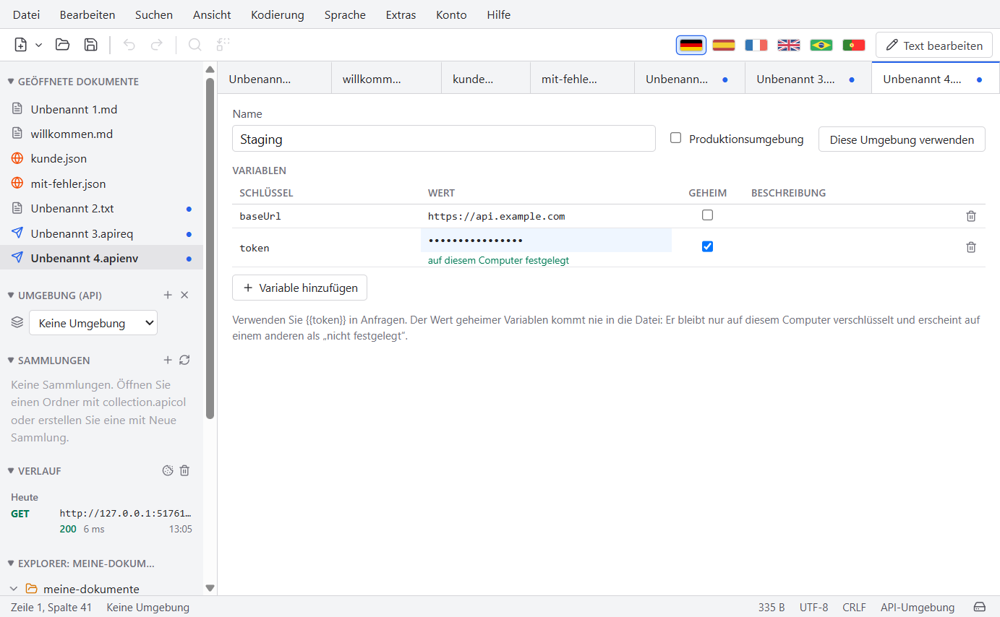
Eine Umgebung fasst Variablen zusammen, etwa die Adresse des Testservers und die der Produktion. Mit Extras → API-Umgebungen (neue Umgebung) legen Sie eine an (.apienv-Datei) und wählen die aktive im Auswahlfeld Aktive Umgebung.
- Aktivieren Sie Geheim bei vertraulichen Variablen. Der Wert wird auf diesem Computer verschlüsselt gespeichert und gelangt nicht in die .apienv-Datei.
- Aktivieren Sie Produktionsumgebung bei einer Produktionsumgebung: Die App fragt nach, bevor sie POST, PUT, PATCH und DELETE sendet.
- Empfangene Cookies werden je Umgebung getrennt gehalten; Sie sehen oder löschen sie unter Extras → API-Cookies .
Sammlungen und Verlauf
Eine Sammlung ist ein Ordner mit den Anfragen und der .apicol-Datei, die die gemeinsame Autorisierung und die gemeinsamen Variablen enthält. In der Seitenleiste zeigt der Abschnitt Sammlungen die Sammlungen Ihrer geöffneten Ordner; mit der rechten Maustaste legen Sie Anfragen und Ordner an und wählen Ausführen , Exportieren , Dokumentieren (erzeugt die Dokumentation der Sammlung) und Sammlungseinstellungen.
Der Verlauf (auch unter Extras → API-Verlauf) listet die zuletzt gesendeten Anfragen auf, und Sie können ihn jederzeit leeren.
Importieren, exportieren und Code erzeugen
- Extras → Anfragen importieren (curl, Postman, OpenAPI) übernimmt Anfragen aus curl, Postman, OpenAPI/Swagger, Insomnia, HAR und .http-Dateien. Klicken Sie auf Analysieren, um zu sehen, was importiert wird, und wählen Sie Als Sammlung importieren oder In Tabs öffnen. Auch das Einfügen eines curl-Befehls in die URL bietet den Import an.
- Exportieren speichert die Sammlung als Postman, OpenAPI, HAR, .http oder curl. Werte geheimer Variablen werden nie exportiert.
- Die Schaltfläche Code öffnet Code generieren und zeigt die Anfrage in mehreren Sprachen, bereit zum Kopieren.
Eine Sammlung ausführen
Wählen Sie bei Ausführen die Anfragen, die Umgebung, die Anzahl der Durchläufe und die Pause dazwischen. Eine Datendatei (CSV oder JSON) wiederholt die Ausführung mit den Werten jeder Zeile, und Beim ersten Fehler anhalten hält beim ersten Fehler an. Klicken Sie auf Ausführen: Das Ergebnis öffnet sich als Bericht (.apirun) mit Summen, Zeiten und den Tests jeder Anfrage. Mit Exportieren speichern Sie den Bericht als JUnit XML, HTML oder Markdown.
GraphQL
Wählen Sie unter Body-Typ GraphQL, um die Abfrage und die Variablen (JSON) zu schreiben. Mit Schema laden liest die App das Schema des Servers, zeigt die Dokumentation der Typen und bietet die Autovervollständigung an.
Sicherheit
- Alle Anfragen gehen von Ihrem eigenen Computer aus, über die App; nichts läuft über unsere Server.
- Passwörter, Tokens und geheime Werte liegen im Tresor des Betriebssystems (verschlüsselt). Hat das System keinen Tresor, bleiben sie nur im Arbeitsspeicher und gehen beim Schließen der App verloren.
- Diese Werte gelangen nie in Dateien (.apireq, .apienv, .apicol), Exporte, erzeugten Code, Protokolle oder die Cloud. Auch Verlauf und Cookies bleiben nur auf diesem Computer.
- Nur gespeicherte Antworten und Berichte einer Sammlung können mit der Cloud synchronisiert werden, und nur wenn Sie Gespeicherte Antworten und Berichte über die Cloud synchronisieren einschalten.
9. In Dateien suchen
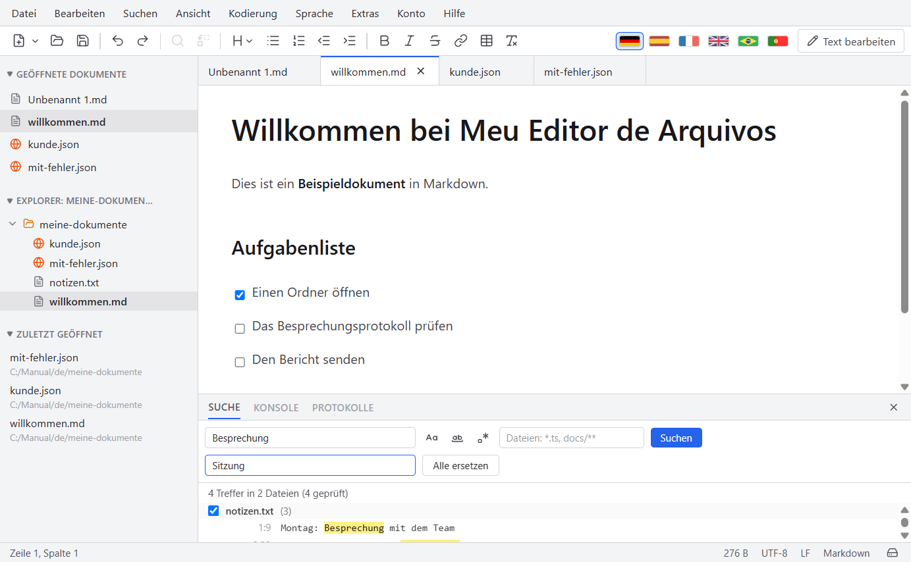
Öffnen Sie einen Ordner und wählen Sie Suchen → In Dateien suchen (Ctrl+Shift+F). Der untere Bereich öffnet sich.
- Geben Sie den Text ein und klicken Sie auf Suchen (oder drücken Sie die Eingabetaste).
- Verfeinern Sie die Suche mit den drei Schaltflächen daneben: Groß-/Kleinschreibung beachten, Ganzes Wort und Regulärer Ausdruck.
- Um die Dateien einzugrenzen, schreiben Sie einen Filter, etwa
*.md, docs/**. - Die Ergebnisse erscheinen nach Dateien gruppiert, mit Zeile und Spalte. Klicken Sie auf ein Ergebnis, um die Datei zu öffnen und die Fundstelle zu markieren.
Zum Ersetzen geben Sie den neuen Text im Ersetzungsfeld ein und klicken auf Alle ersetzen. Entfernen Sie das Häkchen bei Dateien, die sich nicht ändern sollen. Die Anwendung bittet um Bestätigung, denn das Ersetzen wird direkt in die Dateien geschrieben und lässt sich im Editor nicht rückgängig machen. Geöffnete Dateien mit nicht gespeicherten Änderungen werden übersprungen, damit keine Arbeit verloren geht.
Die Suche durchsucht keine Ordner wie node_modules und .git und auch keine Binärdateien oder Dateien über 5 MB. Sie zeigt höchstens 5.000 Treffer auf einmal.
10. Sprache, Kodierung und Zeilenenden
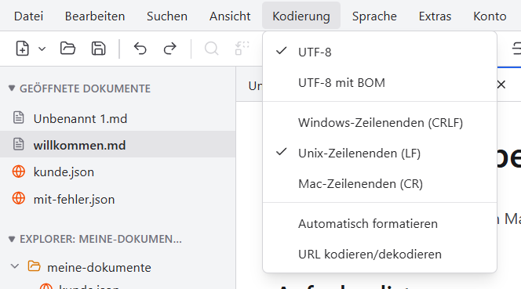
- Sprache: Die Anwendung wählt die Sprache anhand der Dateiendung und nutzt Farben, damit der Text leichter lesbar ist. Um die Sprache eines Dokuments zu ändern, öffnen Sie das Menü und wählen eine andere.
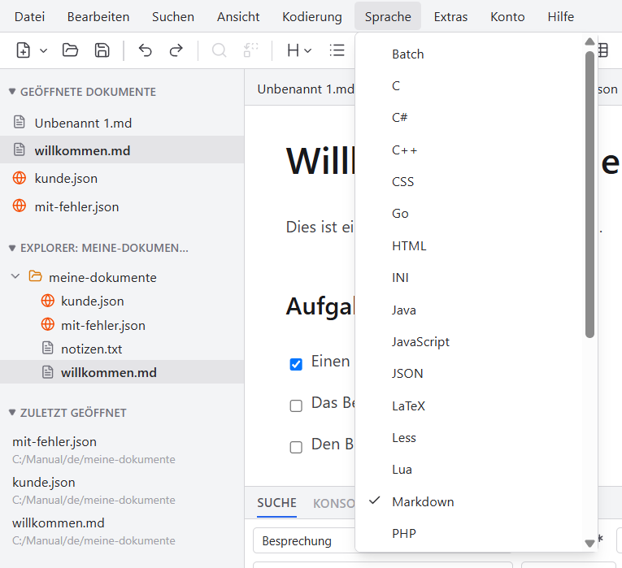
- Kodierung: Wandeln Sie das Dokument in UTF-8 oder UTF-8 mit BOM um und wählen Sie Zeilenenden nach Windows (CRLF), Unix (LF) oder Mac (CR). Eine Umwandlung markiert das Dokument als geändert; zum Wirksamwerden genügt Speichern.
- Automatisch formatieren entfernt doppelte Leerzeichen aus dem Dokument (die Einrückung der Zeilen bleibt) und formatiert es im Standardstil der Sprache: Python wie Python (PEP 8), C und C++ im LLVM-Stil, Java im Google-Stil, C# im Microsoft-Stil, Go mit gofmt sowie JavaScript, TypeScript, JSON, CSS, HTML, Markdown, YAML, PHP und XML mit Prettier; außerdem Lua, Shell und SQL. Funktioniert ohne Internet. Bei Sprachen ohne Formatierer (Rust, PowerShell, Batch, LaTeX, INI, TOML und Text) werden nur die doppelten Leerzeichen entfernt; die Statusleiste weist darauf hin. Bei einem Syntaxfehler zeigt ein Fenster die betroffene Zeile.
- Fehlt in Python die Einrückung, wird sie abgeleitet: Nach einer Zeile, die mit
:endet, öffnet der Block eine Ebene;if-,for-,while-,try- undwith-Blöcke umfassen die nächste Zeile; der Rumpf einesdefreicht bis zu einer Leerzeile oder einemreturn. Prüfen Sie das Ergebnis, denn in Python ändert die Einrückung, was das Programm tut. Anführungszeichen bleiben, wie Sie sie geschrieben haben. Achtung: Auch doppelte Leerzeichen in Texten zwischen Anführungszeichen werden entfernt. Ctrl+Z macht alles auf einmal rückgängig. - URL kodieren/dekodieren kodiert den markierten Text im Format von Webadressen (
meine Seitewird zumeine%20Seite); ist der Text bereits kodiert, wird er dekodiert. Bei einer vollständigen Adresse (https://…) bleiben die Trennzeichen: / ? & = #erhalten.
Kodierung und Zeilenenden werden in der Statusleiste angezeigt.
11. Snippets und Makros
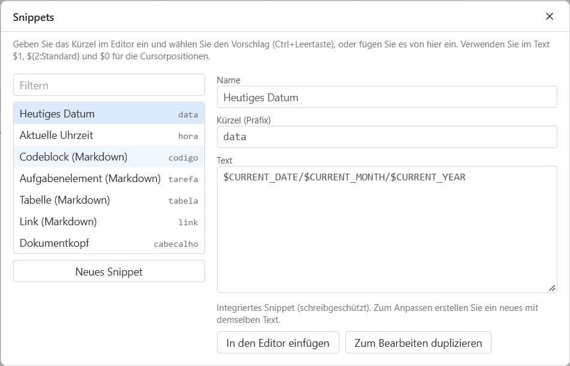
Snippets sind fertige Textbausteine. Öffnen Sie Extras → Snippets. Einige bringt die Anwendung schon mit: data, hora, codigo, tarefa, tabela, link und cabecalho. Zum Verwenden geben Sie das Kürzel im Editor ein und wählen den Vorschlag aus (oder drücken Ctrl+Leertaste), oder Sie klicken im Fenster auf In den Editor einfügen. Ein eigenes Snippet legen Sie mit Neues Snippet an: Vergeben Sie Name, Kürzel und Text. Im Text markieren $1 und ${2:Standard} die Stellen, an denen der Cursor anhält, und $0 ist die Endposition. Die mitgelieferten Snippets lassen sich nicht bearbeiten, aber duplizieren.
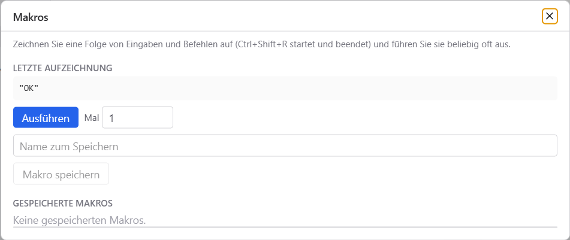
Makros wiederholen eine Abfolge, die Sie ausgeführt haben. Mit Ctrl+Shift+R starten Sie die Aufzeichnung, schreiben oder bearbeiten, was Sie möchten, und beenden sie mit Ctrl+Shift+R. Danach führt Ctrl+Shift+M die letzte Aufzeichnung aus. Unter Makros legen Sie fest, wie oft sie wiederholt wird, und können das Makro unter einem Namen speichern. Aufgezeichnet werden eingegebener Text, eingefügter Text, die Pfeiltasten, Pos1, Ende, Rücktaste, Entf, Tab, die Eingabetaste und Menübefehle. Mausklicks und Ctrl+Z werden nicht aufgezeichnet.
12. Konto und Cloud-Dateien
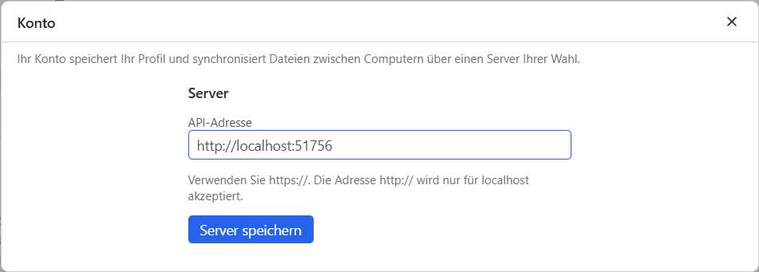
Mit einem Konto speichern Sie Dateien in der Cloud und öffnen sie auf anderen Computern. Öffnen Sie das Menü Konto.
- Serveradresse: Geben Sie beim ersten Mal die Adresse ein, die Ihnen Ihr Unternehmen oder Ihr Administrator mitgeteilt hat. Sie beginnt mit
https://. - Konto erstellen: Klicken Sie auf Konto erstellen und tragen Sie E-Mail-Adresse, Namen und ein Passwort mit mindestens 10 Zeichen ein.
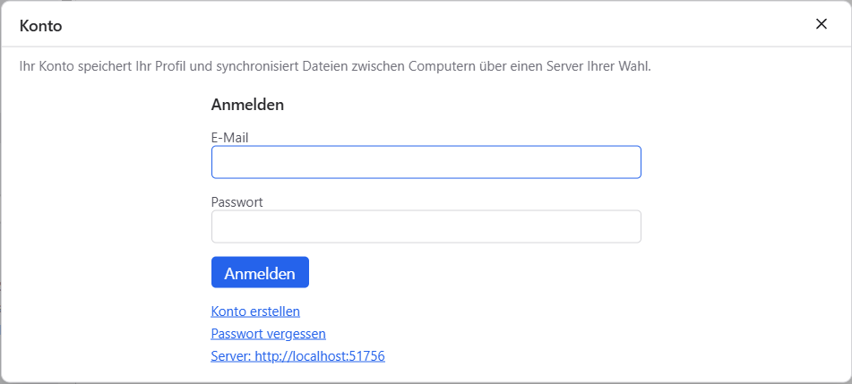
- Anmelden: Verwenden Sie Ihre E-Mail-Adresse und Ihr Passwort. Wenn Sie das Passwort vergessen haben, klicken Sie auf Passwort vergessen: Sie erhalten einen Code per E-Mail und können ein neues Passwort festlegen.
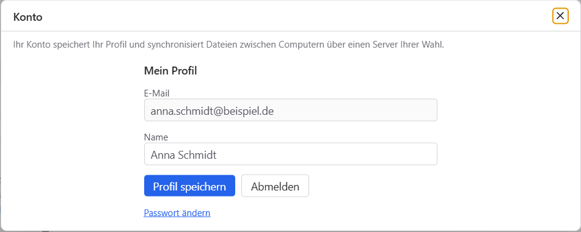
- Profil: Öffnen Sie unter Konto Ihr Profil, um den Namen oder das Passwort zu ändern oder sich abzumelden. Wenn Sie das Passwort ändern, müssen sich Ihre anderen Computer neu anmelden.
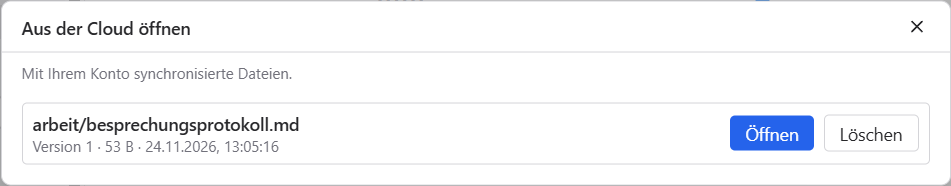
- In der Cloud speichern: Datei → In der Cloud speichern. Wählen Sie den Pfad, zum Beispiel
arbeit/protokoll.md. - Aus der Cloud öffnen: Datei → Aus der Cloud öffnen. In der Liste öffnen oder löschen Sie Dateien. In einem aus der Cloud geöffneten Dokument speichert Ctrl+S wieder in der Cloud.
Hat sich die Datei seit der letzten Synchronisierung in der Cloud geändert, warnt die Anwendung und fragt, ob sie überschrieben werden soll. Jede Datei darf bis zu 10 MB groß sein. Hat Ihr System keinen Tresor für Anmeldedaten, weist die Anwendung darauf hin, dass Sie sich bei jedem Start neu anmelden müssen.
Solange Sie angemeldet sind, zeigt die Statusleiste links neben dem Cloud-Symbol, wie viel Cloud-Speicher Sie belegen, in MB mit zwei Nachkommastellen (zum Beispiel 1.25 MB). Gezählt werden alle Ihre Dateien in der Cloud und die Texte noch nicht gespeicherter Dokumente, die aufbewahrt werden, damit Sie an einem anderen Computer weiterarbeiten können. Der Wert ändert sich bei jedem Speichern oder Löschen. Eine unverändert geöffnete Cloud-Datei belegt keinen zusätzlichen Speicher; nur noch nicht gespeicherter Text wird aufbewahrt.
Wird dasselbe Dokument vor der Synchronisierung an zwei Computern geändert, behält jeder Computer seinen Text, und die andere Version öffnet sich in einem neuen Tab mit „(Konflikt – anderer Computer)“ im Namen, damit nichts verloren geht.
13. Sprachen
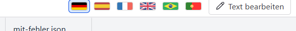
Die Anwendung gibt es auf Deutsch, Spanisch, Französisch, Englisch, Portugiesisch (Brasilien) und Portugiesisch (Portugal). Sie startet in der Sprache Ihres Systems; gibt es dafür keine Übersetzung, startet sie auf Englisch. Zum Wechseln klicken Sie auf die Flagge der gewünschten Sprache links neben der Schaltfläche für die Vorschau. Der Wechsel wirkt sofort und wird für das nächste Mal gespeichert. Dieses Handbuch öffnet sich in der gerade verwendeten Sprache.
14. Tastenkürzel
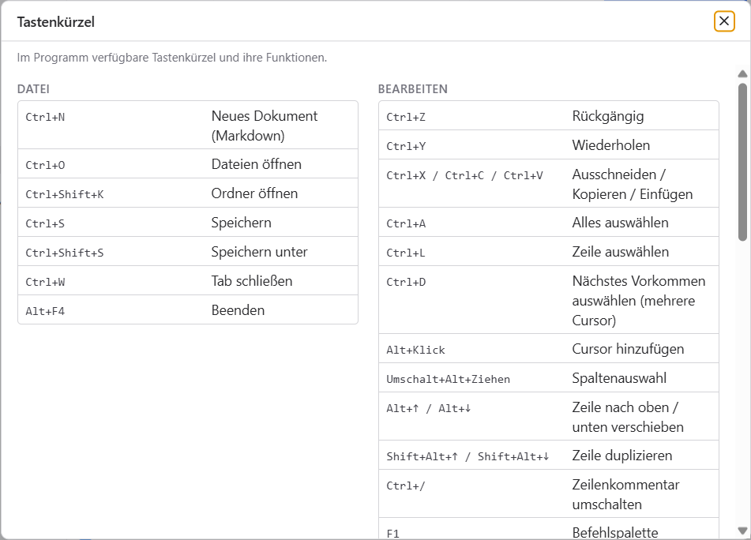
Die Liste sehen Sie auch in der Anwendung unter Hilfe → Tastenkürzel. Die verfügbaren Tastenkürzel:
Datei
| Ctrl+N | Neues Dokument (Markdown) |
| Ctrl+O | Dateien öffnen |
| Ctrl+Shift+K | Ordner öffnen |
| Ctrl+S | Speichern |
| Ctrl+Shift+S | Speichern unter |
| Ctrl+W | Tab schließen |
| Alt+F4 | Beenden |
Bearbeiten
| Ctrl+Z | Rückgängig |
| Ctrl+Y | Wiederholen |
| Ctrl+X / Ctrl+C / Ctrl+V | Ausschneiden / Kopieren / Einfügen |
| Ctrl+A | Alles auswählen |
| Ctrl+L | Zeile auswählen |
| Ctrl+D | Nächstes Vorkommen auswählen (mehrere Cursor) |
| Alt+Klick | Cursor hinzufügen |
| Umschalt+Alt+Ziehen | Spaltenauswahl |
| Alt+↑ / Alt+↓ | Zeile nach oben / unten verschieben |
| Shift+Alt+↑ / Shift+Alt+↓ | Zeile duplizieren |
| Ctrl+/ | Zeilenkommentar umschalten |
| F1 | Befehlspalette |
| F7 | Rechtschreibprüfung |
| Ctrl+. | Rechtschreibvorschläge |
Suchen
| Ctrl+F | Suchen |
| Ctrl+H | Ersetzen |
| Ctrl+Shift+F | In Dateien suchen |
| Ctrl+G | Gehe zu Zeile |
Ansicht
| Ctrl+Shift+B | Seitenleiste ein- oder ausblenden |
| Ctrl+Shift+E | Zwischen Vorschau und Bearbeitung wechseln (Markdown, JSON und API-Anfragen) |
| F11 | Vollbild ein- oder ausschalten |
| Ctrl++ | Schrift vergrößern |
| Ctrl+- | Schrift verkleinern |
| Ctrl+0 | Standardschriftgröße |
Markdown und JSON
| Ctrl+B | Fett |
| Ctrl+I | Kursiv |
| Ctrl+Shift+X | Durchgestrichen |
| Shift+Alt+F | Dokument formatieren (JSON) |
Makros
| Ctrl+Shift+R | Makroaufzeichnung starten oder beenden |
| Ctrl+Shift+M | Letztes Makro ausführen |
API-Client
| Ctrl+Shift+A | API-Client öffnen (neue Anfrage) |
| Ctrl+Enter | Anfrage senden (im API-Tab) |
| Esc | Laufende Anfrage abbrechen (im API-Tab) |
15. Häufige Fragen
Ich habe die Anwendung ohne Speichern geschlossen. Ist mein Text weg? Nein. Nicht gespeicherter Text wird automatisch gesichert und kommt zurück, wenn Sie die Anwendung wieder öffnen.
Warum wird Markdown formatiert geöffnet und ich kann nichts eintippen? Das ist der Lesemodus. Klicken Sie auf Text bearbeiten (oder Ctrl+Shift+E), um zu bearbeiten.
Mein JSON zeigt einen Fehler, lässt sich aber in einem anderen Programm öffnen. Der Viewer hält sich strikt an den JSON-Standard: Ein überzähliges Komma am Ende, Kommentare und einfache Anführungszeichen sind nicht erlaubt. Mit der Schaltfläche beim Fehler gelangen Sie direkt zur Fehlerstelle.
Die Datei ist groß und lässt sich nicht öffnen. Die Grenze liegt bei 50 MB pro Datei.
Ich kann mich nicht anmelden oder nicht in der Cloud speichern. Prüfen Sie die Serveradresse und Ihre Internetverbindung. Wenn die Meldung besagt, dass die Sitzung abgelaufen ist, melden Sie sich erneut an.
Wie sehe ich die Version der Anwendung? Unter Hilfe → Über Meu Editor de Arquivos.
16. Über das Programm und Support
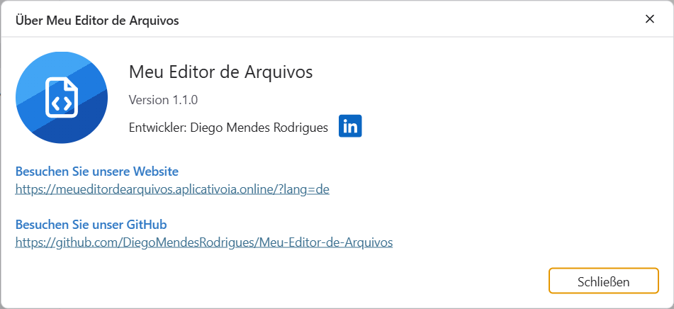
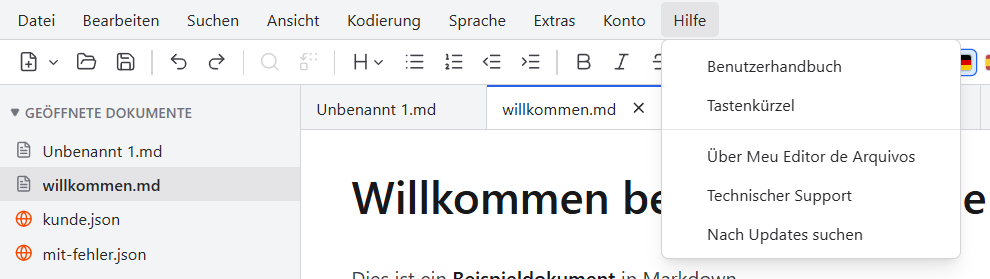
Meu Editor de Arquivos wurde von Diego Mendes Rodrigues entwickelt. Der Eintrag Technischer Support im Menü Hilfe ist in dieser Version noch nicht verfügbar.